Lập trình C/C++ với Visual Studio Code¶
Đặc điểm¶
Cài đặt¶
Sử dụng¶
Everybody should learn to program a computer because it teaches you how to think. – Steve Jobs
Đặc điểm chính của Visual Studio Code ¶
- Gọn nhẹ, với nhiều tính năng cao cấp như: gợi ý mã lệnh thông minh (IntelliSense code completion), quản lý phiên bản mã nguồn phân tán (Git).
- Khả năng mở rộng để lập trình với nhiều ngôn ngữ, như C/C++, C#, Java, Python, PHP.
- Chạy trên Windows, macOS và Linux.
- Miễn phí & mã nguồn mở.
- VS Code là công cụ viết mã nguồn (code editor), không phải là IDE đầy đủ. Để viết chương trình C/C++ với VS Code, cần cài đặt thêm các công cụ sau:
- Gói mở rộng (extension) hỗ trợ viết mã nguồn C/C++ và debug.
- Trình biên dịch (compiler) C/C++.
Cài đặt VS Code, C/C++ extension, và C/C++ compiler trên Windows ¶
Cài đặt VS Code¶
- Tải về gói cài đặt. Chọn phiên bản cho Windows.
-
Mở file đã tải xuống để bắt đầu cài đặt.
-
License Agreement: Chọn "I accept the agreement" và nhấn Next.
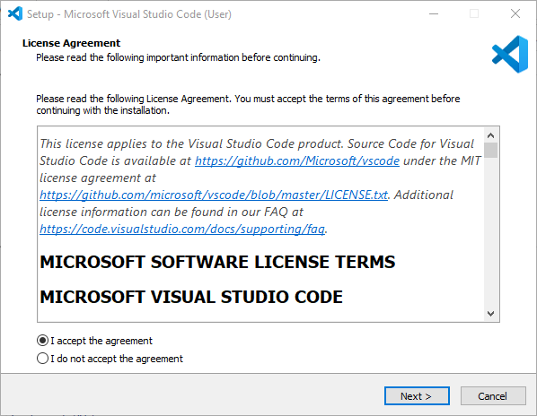
-
Select Additional Tasks: Để các tùy chọn mặc định và nhấn Next.
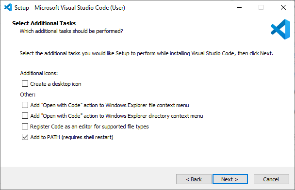
-
Ready to Install: Nhấn Install và chờ quá trình cài đặt hoàn tất.
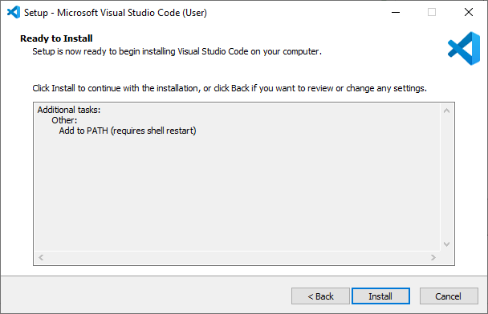
Cài C/C++ extension¶
- Khởi động VS Code
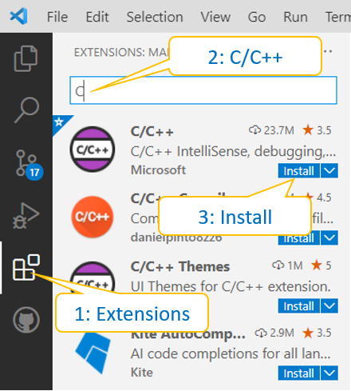
Chọn biểu tượng "Extensions" (Ctrl+Shift+X), nhập C/C++ vào ô tìm kiếm, chọn cài đặt gói "C/C++ IntelliSense, debugging, and code browsing" của Microsoft.
Cài đặt trình biên dịch¶
Trình biên dịch C/C++ thường được sử dụng cho Windows là MinGW (Minimalist GNU for Windows). MinGW miễn phí và mã nguồn mở. - Tải về MinGW.
- Mở file đã tải xuống để bắt đầu cài đặt.
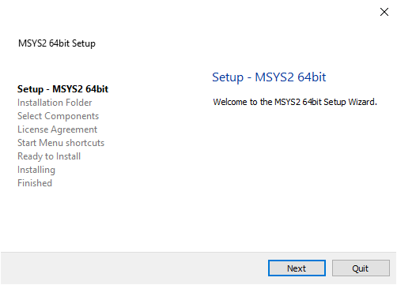
Nhấn Next.
- Installation Folder. Chọn vị trí cài đặt trên ổ đĩa.
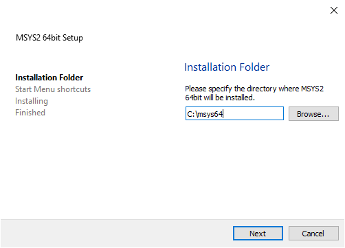
Nhấn Next để cài đặt. Nhấn Finish để hoàn tất.
- Thiết lập biến môi trường
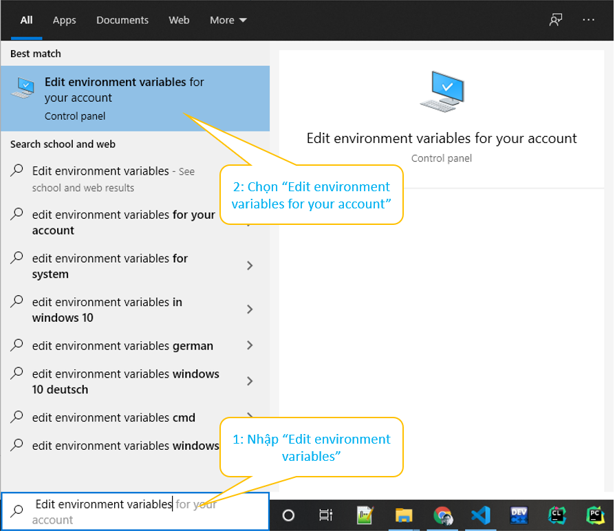
Tại ô tìm kiếm của Windows, gõ "Edit environment variables for account" rồi chọn mở thiết lập tương ứng.
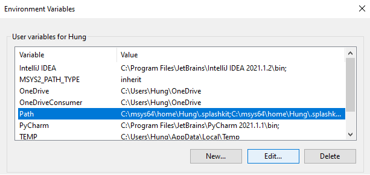
-
User variables for ...: Chọn "PATH" và nhấn Edit.
-
Edit evironment variable: Chọn New.
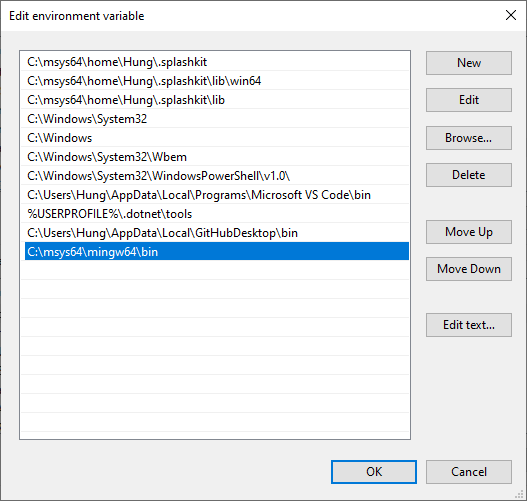
Bổ sung dòng khai báo đường dẫn đến thư mục cài đặt MinGW, ở đây là "C:\msys64\mingw64\bin". Nhấn OK để hoàn tất.
- Kiểm tra kết quả cài đặt trình biên dịch:
Mở cửa sổ Command Prompt và gõ lệnh:
g++ --version
gdb --version
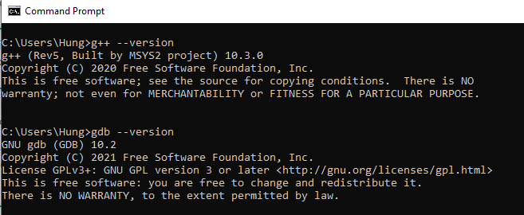
Lập trình C/C++ với VS Code ¶
Tạo chương trình "Hello World" với VS Code.
- Khởi động VS Code.
- Mở cửa sổ Terminal bằng cách chọn Terminal->New Terminal (Ctrl+Shift+`).
Nhập các lệnh sau:
mkdir HelloWorld
cd HelloWorld
code .
- Bước 1: Viết mã nguồn
Ở cửa số Explorer, chọn New File và nhập tên file là "helloworld.c".
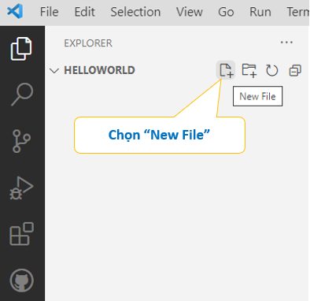
Viết mã nguồn ở file "helloworld.c".
// Hello World from VS Code and MinGW
#include <stdio.h>
int main()
{
printf("Hello World from VS Code & MinGW!");
return 0;
}
- Bước 2: Biên dịch
Chọn Terminal->Run Build Task (Ctrl+Shift+B) để biên dịch. Chọn trình biên dịch là "C:\msys64\mingw64\bin\gcc.exe".
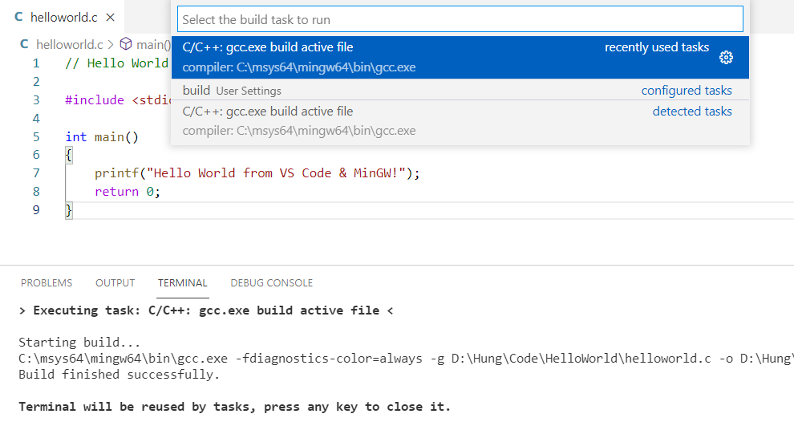
Nếu không còn lỗi cú pháp, ở cửa sổ Terminal trình biên dịch báo "Build finished successfully". Nhấn phím bất kỳ để đóng lại.
- Bước 3: Chạy chương trình
Mở Terminal, nhập tên file thực thi "helloworld.exe" để chạy chương trình:
.\helloworld
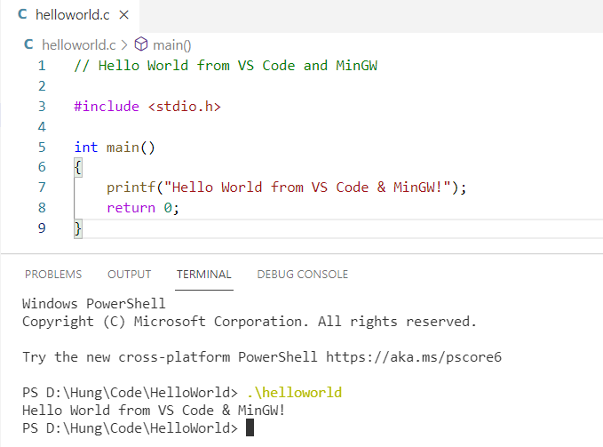